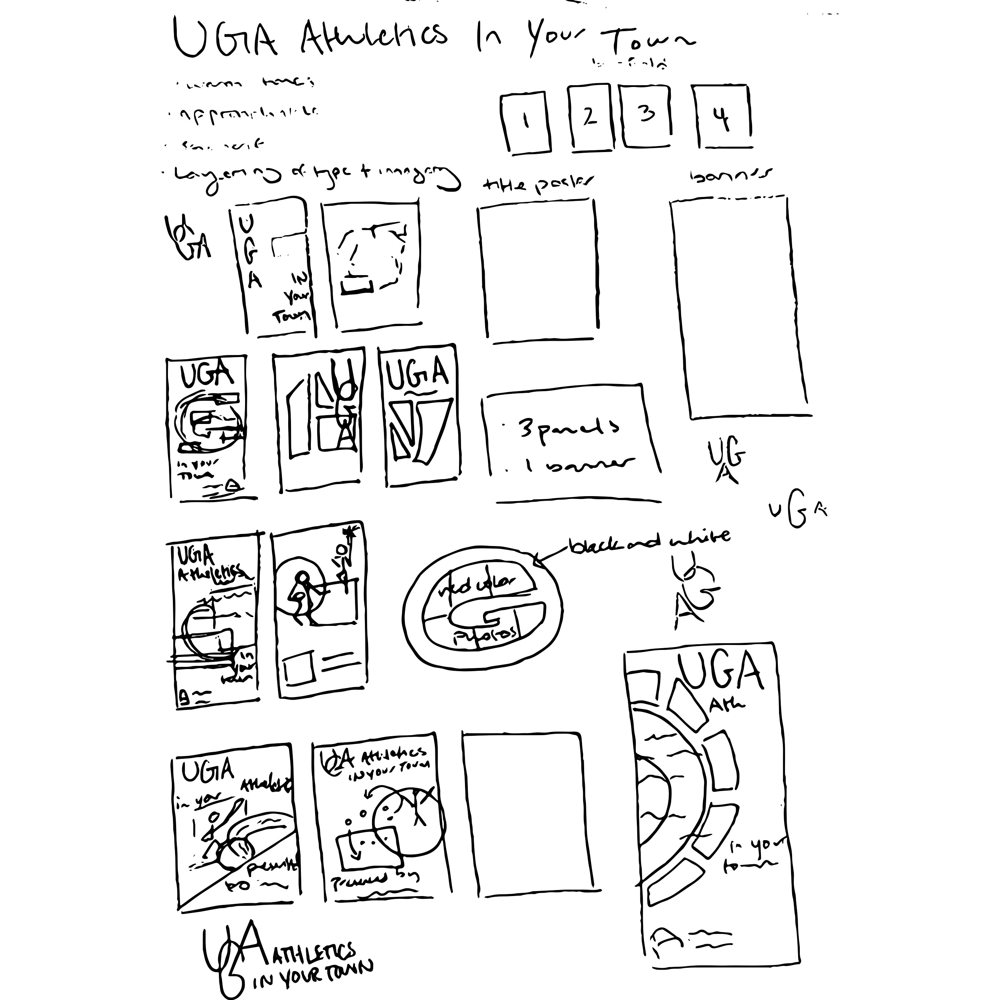
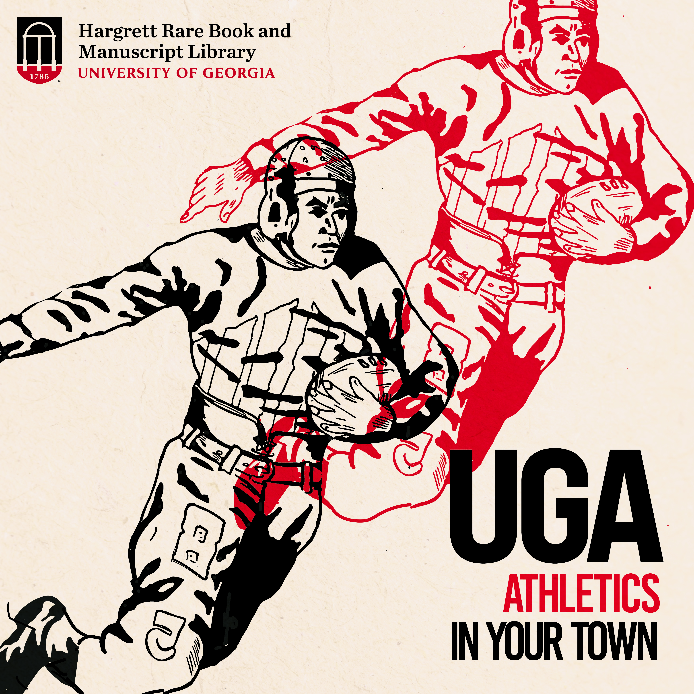
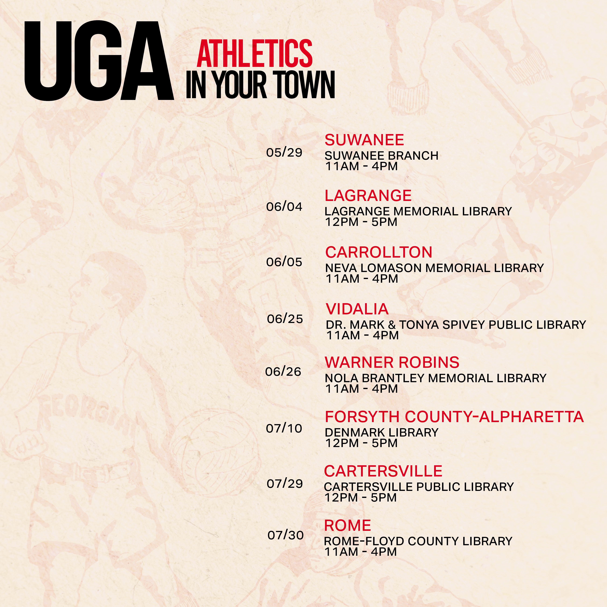
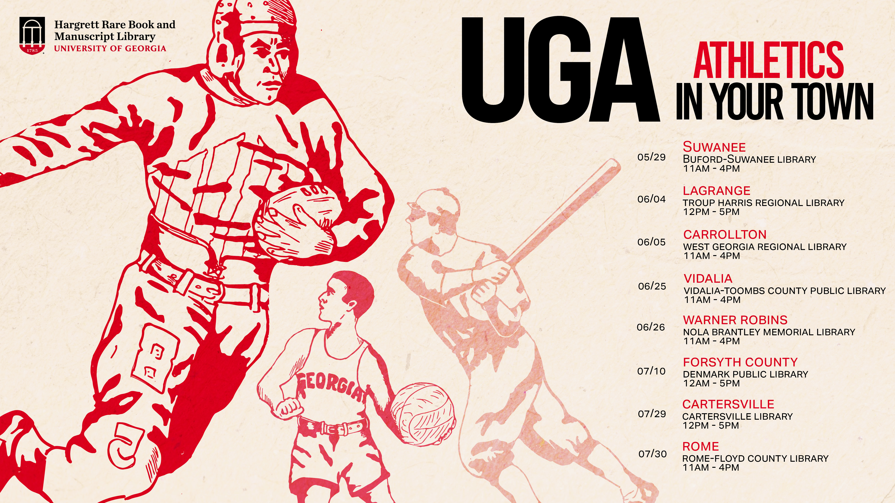
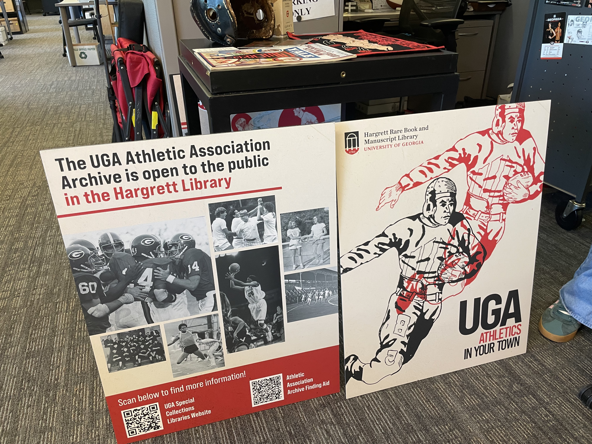
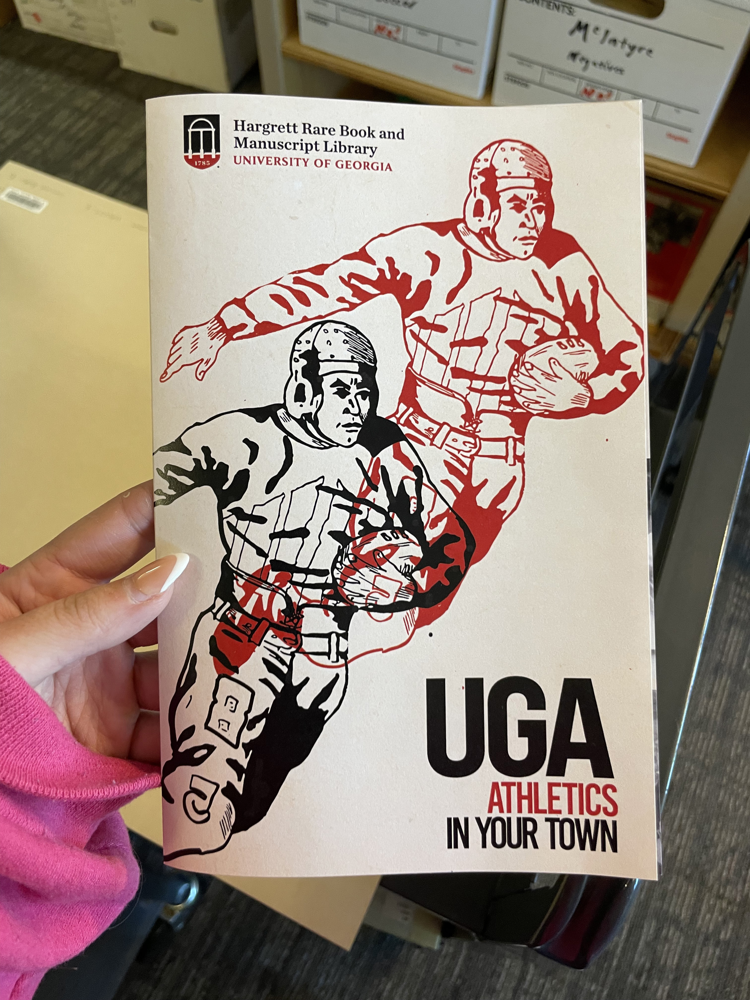
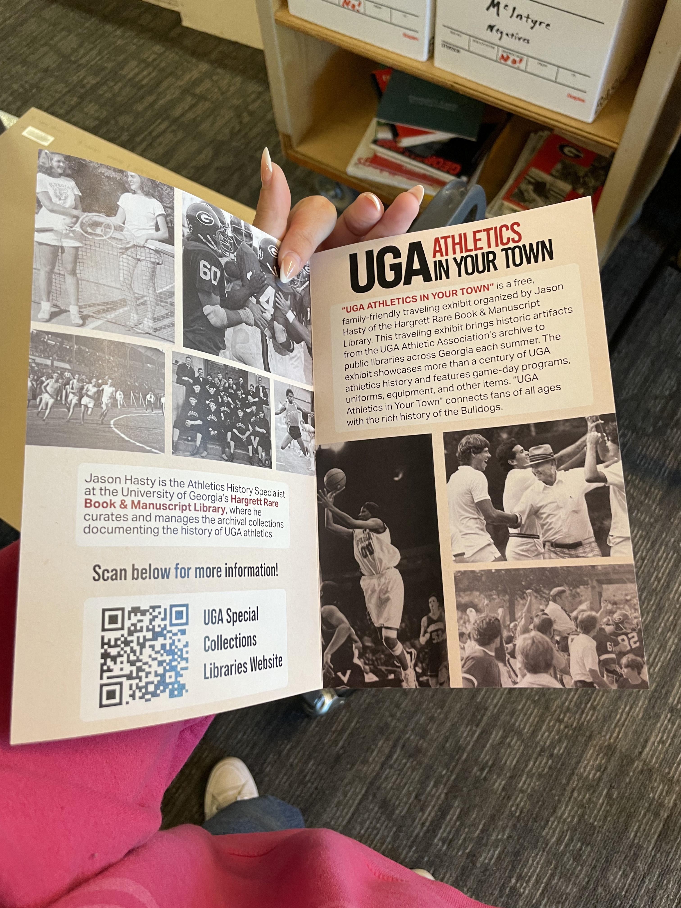
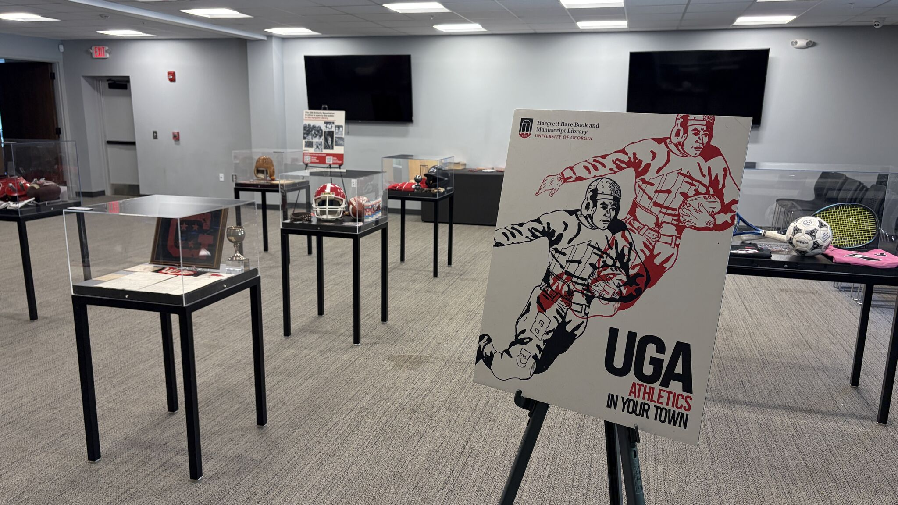
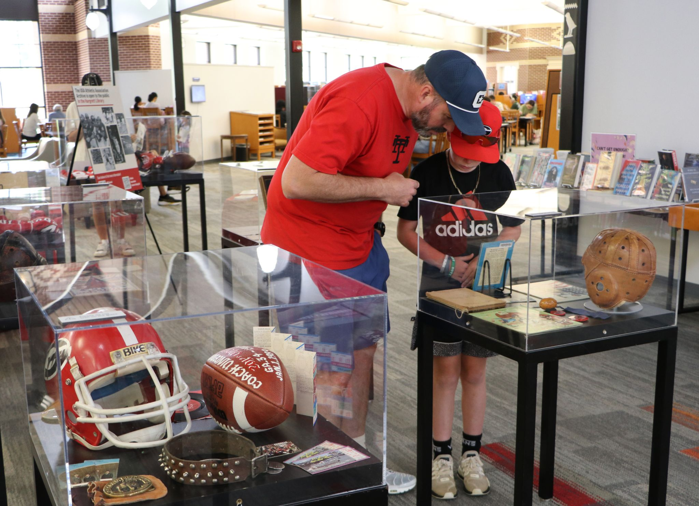

The Hargrett Library needed a coordinated set of print and digital graphics to promote its “UGA Athletics in Your Town” traveling exhibition. The project brought the exhibition's identity into multiple formats, from promotional materials to graphics experienced in person.
← All projects / Project 09
Traveling Exhibition · Campaign Design
UGA Athletics in
Your Town.
A collection of print and digital design assets supporting the University of Georgia's summer traveling exhibition.
- Project
- UGA in Your Town
- Deliverables
- Signage, bifold advertising, social media, and website assets
- Focus
- Exhibition promotion and visual communication
Overview.
Early
Exploration.
I began by exploring ideas on paper before moving into digital design. Sketching gave me room to test compositions and visual directions, then identify concepts that could be developed into a consistent campaign.

Social Media
Graphics.
The campaign extended into social media, adapting the project's visual language for different digital placements. Each graphic needed to communicate clearly on its own while still feeling like part of the same exhibition campaign.



Print & Exhibition
Materials.
The project also included physical exhibition materials. These pieces bring the campaign into the exhibition environment, where clear hierarchy and legible information help visitors navigate and engage with the content.



Exhibition
Photos.
Photographs of the installed exhibition show how the graphics function beyond the screen or page. Seeing the materials together highlights the importance of consistency across formats and within the visitor experience.


Conclusion.
This project gave me experience creating a connected set of visual materials for a traveling exhibition across print and digital platforms. It reinforced the importance of adapting a design system to different formats while keeping the overall campaign cohesive and easy to recognize.